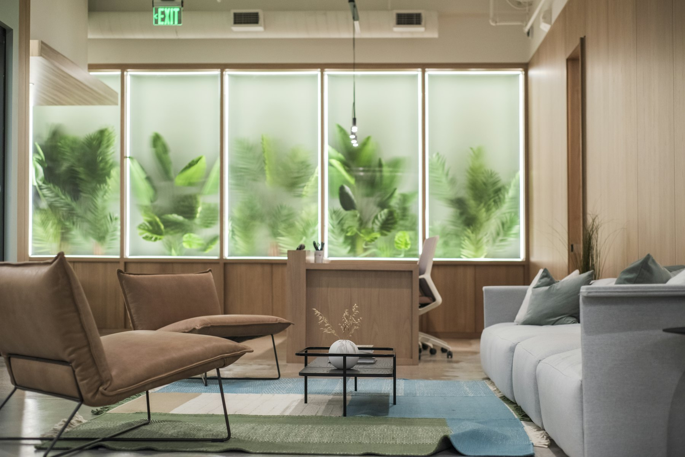
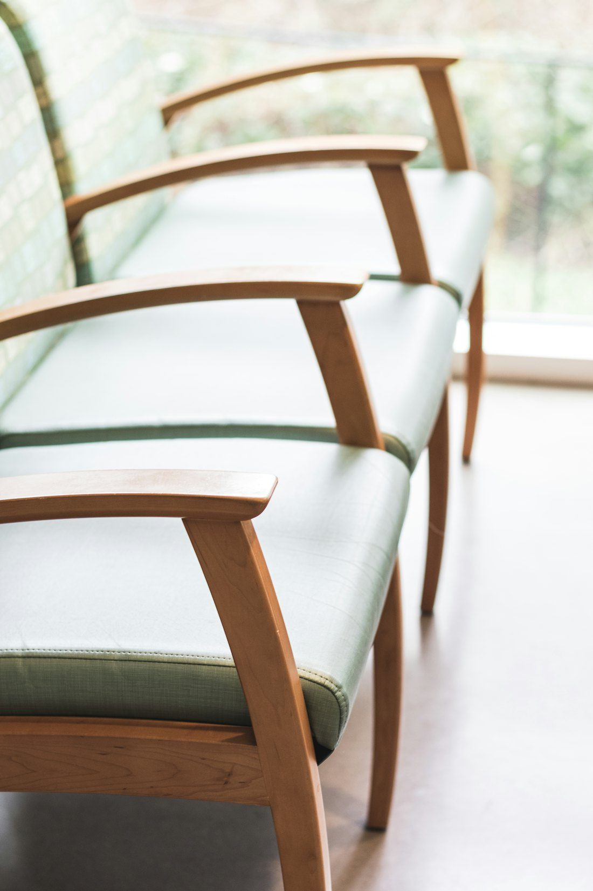
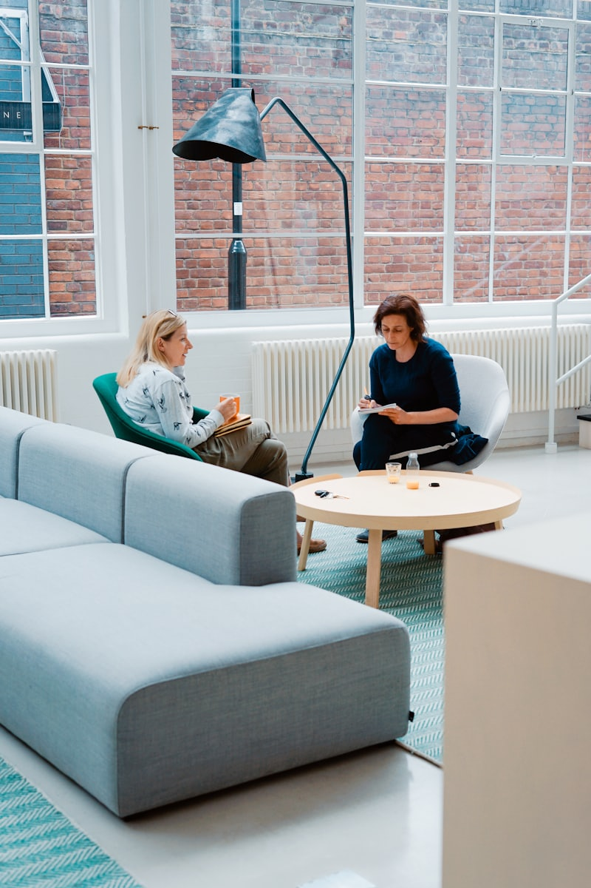
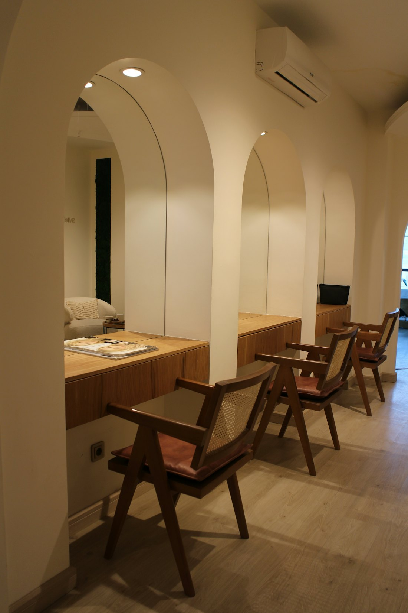

Depression & Erschöpfung
Von der ersten Abklärung bis zur Rückkehr in den Alltag: Diagnostik, Behandlungsplan, medikamentöse Einstellung und begleitende Gespräche — auch bei Burnout und langer Krankschreibung.

Willkommen in der
Med. Dr. (Univ. Ist) Altan Akdag — fachärztliche Behandlung in Mönchengladbach und Krefeld, mit Zeit, Diskretion und einem klaren Plan für Ihren Weg.
Unsere Praxis
Der Weg zu psychiatrischer oder psychotherapeutischer Hilfe kostet Überwindung. Deshalb haben wir unsere Praxis so gestaltet, dass der erste Termin sich unaufgeregt anfühlt: ein ruhiges Wartezimmer, verlässliche Terminzeiten und ein ausführliches Erstgespräch, in dem Sie erzählen können, worum es geht.
Wir behandeln Erwachsene mit Depressionen, Angst- und Zwangserkrankungen, Burnout, Belastungsreaktionen, ADHS, bipolaren und psychotischen Störungen — als Fachpraxis mit allen gesetzlichen Kassen und privat.

Leistungen
Diagnostik, medikamentöse Behandlung und Psychotherapie aus einer Hand — abgestimmt auf das, was Sie gerade brauchen.
Von der ersten Abklärung bis zur Rückkehr in den Alltag: Diagnostik, Behandlungsplan, medikamentöse Einstellung und begleitende Gespräche — auch bei Burnout und langer Krankschreibung.
Panikattacken, generalisierte Angst, soziale Ängste und Zwangsgedanken. Wir ordnen die Beschwerden ein und wählen gemeinsam den Weg — Psychotherapie, Medikation oder beides.
Strukturierte Diagnostik mit Anamnese und Fragebögen, klare Rückmeldung und, wenn sinnvoll, medikamentöse Behandlung mit engmaschiger Kontrolle.

Einzelgespräche in verhaltenstherapeutisch orientierter Ausrichtung, als Kurzzeit- oder Langzeittherapie. Wir besprechen im Erstgespräch, ob und in welcher Form Therapie für Sie passt.
Langfristige fachärztliche Begleitung: Einstellung und Kontrolle der Medikation, Rückfallprophylaxe und Abstimmung mit Angehörigen sowie Kliniken.
Sie sind unsicher, ob Ihr Anliegen hierher gehört? Rufen Sie an — unser Team sagt Ihnen offen, ob wir helfen können oder wer besser passt.
02161 896640
Das Team
Facharzt für Psychiatrie und Psychotherapie
Seit vielen Jahren in Mönchengladbach tätig, mit Schwerpunkt auf Depressionen, Angsterkrankungen und ADHS im Erwachsenenalter. Die Behandlung folgt keinem Schema: Erst wird zugehört, dann wird gemeinsam entschieden — Medikamente nur dort, wo sie wirklich helfen.
Sprechstunden auf Deutsch und Türkisch. Unterstützt wird die ärztliche Arbeit von einem medizinischen Praxisteam, das Termine, Rezepte und Ihre Fragen am Telefon zuverlässig übernimmt.
5,0
aus 316 Bewertungen
2
Fachgebiete in einer Praxis
DE / TR
Sprechstundensprachen
Ihr Weg zu uns
01
Sie rufen an, unser Team fragt kurz nach dem Anliegen und der Dringlichkeit. Bitte halten Sie Ihre Versichertenkarte und — falls vorhanden — die Überweisung bereit.
02
Im Erstgespräch nehmen wir uns Zeit für Ihre Geschichte, aktuelle Beschwerden, Vorbehandlungen und Medikamente. Am Ende steht eine klare Einschätzung.
03
Gemeinsam legen wir die nächsten Schritte fest: Kontrolltermine, Therapie, Medikation oder Überweisung. Sie wissen jederzeit, was als Nächstes ansteht.
Wichtige Hinweise
Bei akuter Selbst- oder Fremdgefährdung wenden Sie sich bitte sofort an den Notruf 112, den ärztlichen Bereitschaftsdienst 116 117 oder die nächstgelegene psychiatrische Klinik. Unsere Praxis ist keine Notfallambulanz.
Folgerezepte bitte telefonisch anmelden — bereitgestellt innerhalb von zwei Werktagen. Eine Überweisung ist für einen Termin bei uns nicht zwingend erforderlich.
Wenn Sie einen Termin nicht wahrnehmen können, sagen Sie bitte mindestens 24 Stunden vorher ab. So kann ein anderer Patient den Platz erhalten — Wartezeiten werden dadurch für alle kürzer.
Kontakt & Anfahrt
Standort Mönchengladbach
Lindenstraße 260, 41063 Mönchengladbach
Standort Krefeld
Ostwall 95, Krefeld
Telefon
Öffnungszeiten Mönchengladbach